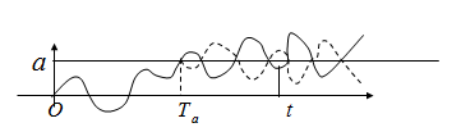

04 | 布朗运动 ¶
约 4091 个字 2 张图片 预计阅读时间 16 分钟
Cheet Sheet¶
数字特征：
- \(\forall\;0\leq s<t\quad X(t)-X(s)\sim N(0,\sigma^2(t-s))\)
- 正态分布的 pdf，在求特殊分布的时候有用
- 均值函数：\(\mu_B(t)=0\)
- 方差函数：\(D_B(t)=t\)
- \(Var(A\pm B) = Cov(A\pm B,A\pm B) = Var(A) + Var(B) \pm 2Cov(A,B)\)
- 自协方差函数：\(C_B(t,s) =min(t,s)\qquad t,s>0\)
性质：
- 写成增量的形式，增量之间互相独立
- 马尔科夫性：\(B(t+\tau)-B(\tau)\) 也是标准布朗
- 自相似性：\(\forall\;a\neq0\quad\) { \(\frac1aB(a^2t);t\geq 0\) } 是标准布朗运动。
- \(0-\infty\)对称性：\(\overset{\sim}B(t)=\begin{cases}tB(\frac 1t)\quad t>0\\[2ex]0\qquad\quad t=0\end{cases}\) 则 { \(\overset{\sim}B(t);t\geq0\) } 是标准布朗运动。
当遇到条件比现在大的情况 如 \(P(B(1)>1|B(2)=2)\) 一般都考虑使用相似或者对称性质进行求解，而不是使用贝叶斯
特殊分布：
- 首次击中时间：\(P\left(\max_{s\leq t}B(s)\geq a\right) = P(T_a \leq t) = 2P(B(t)\geq a),\quad a > 0\)
布朗桥
\(X(t)=B(t)-tB(1)\quad 0\leq t \leq 1\)
- \(X(0)=X(1)=0\) （桥的形状）
- 均值：\(\mu_X(t)=0\)
- 协方差：\(C_X(s, t) = s(1 - t),\quad 0 < s < t < 1\)
定义 ¶
直线上一质点每隔 \(\Delta t\) 等概率向左或向右移动距离 \(\Delta x\) ，且每次移动相互独立 ，\(X(t)\) 为 \(t\) 时刻质点的位置。
① \(X(t)\sim N(0,\sigma^2)\)
② \(X(0)=0\)
③ \(\forall\;0\leq s<t\quad X(t)-X(s)\sim N(0,\sigma^2(t-s))\)
样本轨道连续
独立增量
标准布朗运动的性质 ¶
- 齐次的独立增量过程
- 正态过程，分布完全由均值函数和自协方差函数确定
- 数字特征 * 均值函数：\(\mu_B(t)=0\) * 方差函数：\(D_B(t)=t\) * 自协方差函数：
证明
我们考虑 \(t \leq s\)（不妨设 \(t \leq s\)，因为结果是对称的
我们将 \(B(s)\) 拆成两个部分：
将其代入协方差函数中：
注意：
- \(B(t)\) 与 \(B(s) - B(t)\) 独立；
- \(\mathbb{E}[B(s) - B(t)] = 0\)；
- 因为独立且后者期望为零，交叉项为 0。
因为我们设定 \(t \leq s\)，所以
布朗运动判定 ¶
布朗运动当且仅当它是正态过程，\(E(B(t))=0\) 且 \(E[B(t)B(s)]=t\wedge s.\)
Markov 性 ¶
\(\forall\;t\quad\) { \(B(t+s)-B(t);s\geq 0\) } 是标准布朗运动。
起点的选取是任意的
证明
我们证明 \(\{B(t); t \geq 0\}\) 是布朗运动。已知 \(B(t)\) 是一个均值为 0，协方差函数为
的随机过程。我们进行如下验证：
(1) 均值与方差
因此对于 \(0 \leq s < t\)，有
(2) 独立增量
设任意的
我们计算两个增量的协方差：
因此，增量 \(B(t_1) - B(s_1)\) 与 \(B(t_2) - B(s_2)\) 互相独立。
结合 \(B(0) = 0\)，可知 \(\{B(t); t \geq 0\}\) 是具有独立增量的高斯过程。
(3) 正态过程
对任意整数 \(n\) 和时间点
考虑随机向量
记增量为
则
是增量变量 \(X_1, X_2, \ldots, X_n\) 的线性组合。
由于每个增量 \(X_i\) 都服从正态分布且两两独立，因此整个向量服从多元正态分布。
故 \(\{B(t); t \geq 0\}\) 是正态过程。
结论：
综上所述，\(\{B(t); t \geq 0\}\) 是满足以下条件的随机过程：
- \(B(0) = 0\)；
- 有独立增量；
- 每个增量 \(B(t) - B(s) \sim \mathcal{N}(0, t - s)\)；
- 是正态过程。
因此，\(\{B(t); t \geq 0\}\) 是一个布朗运动。 \(\blacksquare\)
多元正太分布的线性变换依然是正态分布
自相似性 ¶
\(\forall\;a\neq0\quad\) { \(\frac1aB(a^2t);t\geq 0\) } 是标准布朗运动。
布朗运动的自相似性（self-similarity是它最核心、最优美的性质之一。在直觉上，它表达的是：
把布朗运动放大或缩小，看起来就像是原来的布朗运动。
自相似性是：
- 分形的核心特征（布朗运动是随机分形）
- 在金融中解释“不同时间尺度价格走势看起来相似”的数学基础
- 分析长时间行为时简化问题的重要工具
0 与 \(\infty\) 对称性 ¶
令 \(\overset{\sim}B(t)=\begin{cases}tB(\frac 1t)\quad t>0\\[2ex]0\qquad\quad t=0\end{cases}\) 则 { \(\overset{\sim}B(t);t\geq0\) } 是标准布朗运动。
把布朗运动做“时间倒转 + 振幅缩放”，你又得到了一个标准布朗运动。
| 应用领域 | 举例说明 |
|---|---|
| 路径分析 | 某些 hitting time 与 maximum/minimum 问题在 0 和 ∞ 对称变换下形式不变 |
| 随机分形 | 说明布朗运动具有尺度不变性，是分形过程 |
| 金融建模 | 定价模型中分析小时间步和大时间尺度行为的一致性 |
| 理论物理 | 在量子场论中，布朗运动模型是路径积分的基础，体现“红外 - 紫外对称”思想 |
分形（Fractal）是一种数学和自然界中常见的结构，它具有局部和整体相似的特点，是许多复杂系统的本质特征。
虽然“分形”没有一个唯一公认的严格定义，但以下是 Benoît Mandelbrot（曼德博，分形理论之父）给出的经典定义之一：
一个几何形状，如果它的 Hausdorff 维数（分形维数）严格大于其拓扑维数，则称为分形。
| 图形 | 拓扑维数（整数） | 分形维数（可为小数） |
|---|---|---|
| 直线段 | 1 | 1 |
| 曼德博集 | 1 | 2 |
| 柯赫雪花曲线 | 1 | ≈ 1.2619 |
| 西尔皮斯基三角形 | 1 | ≈ 1.5849 |
所以“维数大于形状能容纳的维度”是分形的关键特征之一。
一个图形，在放大后细节仍然看起来和整体结构相似，且无限复杂，这种结构叫分形。
这种“局部与整体相似（自相似）”的性质，在自然界和数学中非常常见。
首次击中时 ¶
- \(\max_{s\leq t} B(s)\)：布朗运动在时间区间 \([0,t]\) 中的最大值
- \(T_a = \inf\{s > 0 : B(s) = a\}\)：布朗运动首次达到 \(a\) 的时间
- \(B(t) \sim \mathcal{N}(0,t)\)：在时间 \(t\) 的布朗运动服从均值 0、方差 \(t\) 的正态分布
直观解释

以价格为例，相当于求价格最高点不低于 / 不高于
- 左侧：\(P(\max_{s\leq t}B(s)\geq a)\)：表示“在时间 \(t\) 以内，布朗运动是否曾经达到过或超过了 \(a\)”的概率。
- 中间：\(P(T_a \leq t)\)：布朗运动首次达到 \(a\) 的时间是否早于或等于 \(t\)。这两个其实是同一件事：只要在 \([0,t]\) 里最大值超过了 \(a\)，那么 \(T_a \leq t\)。
-
右边：\(P(B(t)\geq a)\)：布朗运动在正好时刻 \(t\) 达到 \(a\) 或更高的概率。因为布朗运动是对称过程（正态分布对称
） ，所以：\[ P(B(t) \geq a) = P(B(t) \leq -a) \]
-
但我们要的是“曾经达到 \(a\)”的概率，远大于“正好在终点超过 \(a\)”的概率，因此乘 2：
\[ \boxed{P(\max_{s\leq t}B(s)\geq a) = 2P(B(t)\geq a)} \]
这个结果也叫做 反射原理（reflection principle） 的直接推论。
| 表达式 | 含义 |
|---|---|
| \(P(\max_{s\leq t} B(s) \geq a)\) | 布朗运动在 \([0,t]\) 曾超过 a 的概率 |
| \(P(T_a \leq t)\) | 首次达到 \(a\) 的时间早于 \(t\) 的概率 |
| \(2P(B(t) \geq a)\) | 利用布朗运动对称性 + 反射原理的结果 |
注意不同的形式：
- 最大值小于 \(a\) 的概率
- 绝对值的形式：最小值一定小于 0，所以可以直接脱去绝对值符号
\(X(t)=\mid \underset{0\leq s\leq t}{min}\,B(s)\mid = -\underset{0\leq s\leq t}{max}\,B_1(s)\)
- 对称性
- 换元
布朗桥运动 ¶
\(X(t)=B(t)-tB(1)\quad 0\leq t \leq 1\)
- \(X(0)=X(1)=0\)
- 为正态过程
- 均值：
- 协方差（\(0 < s < t < 1\)
） ：
例题 ¶
设 \(\{B(t); t \geq 0\}\) 是标准布朗运动，则
设 \(A \sim N(1,1)\)，且 \(A\) 与 \(\{B(t); t \geq 0\}\) 独立，定义 \(X(t) = B(t) + A t\)，则：
- \(X(1)\) 服从 \(\underline{\qquad\qquad\qquad}\) 分布，
- \(X(1) + X(2)\) 服从 \(\underline{\qquad\qquad\qquad}\) 分布，
- \(\mathrm{Cov}(X(1) + X(2), X(1)) = \underline{\qquad\qquad\qquad}\)
利用布朗运动最大值分布反射原理
取 \(a=2, t=4\)，得
\((B(1), B(2), B(3))\) 是三元正态分布，条件分布计算后有
- \(X(1) + X(2) = B(1) + B(2) + 3A\)
—
求协方差：
$$
\begin{aligned}
\mathrm{Cov}(X(1) + X(2), X(1)) &= \mathrm{Cov}(X(1), X(1)) + \mathrm{Cov}(X(2), X(1))\\
&= \mathrm{Var}(X(1)) + \mathrm{Cov}(X(2), X(1))\\
&= 2 + \mathrm{Cov}(B(2)+2A,B(1)+A)\\
&= 2 + \mathrm{Cov}(B(2),B(1)) + 2\mathrm{Cov}(A,A)\\
&= 2 + \min\{2,1\} + 2\\
&= 5
\end{aligned}
$$
设 { \(B(t);t\geq0\) } 是标准布朗运动，则
（1）\(B(3)-2B(1)\)
服从 \(N(0,3)\) 分布（\(B(3)-2B(1)=B(3)-B(1)-B(1)\sim N(0,2+1)=N(0,3)\)）
（2）\(Cov(B(3)-2B(1),B(2))\)
（3）\(P(B(5.5)>5\mid B(1.1)=3,B(1.5)=1)\)
转化成增量形式进行计算
（4）\(P(\underset{0\leq t\leq6.25}{max}\,B(t)<2.5)\)
相似性 ¶
设 \(\{B(t),t\geq0\}\) 是标准布朗运动，求
(1) \(P\{B(0.5)\leq1|B(1)=1,B(2)=2\}\);
解：\(\{B(t);t\geq0\}\) 是标准布朗运动 . 又 \(B(t)=t\bar{B}(1/t)\), 所以
(2) 在 \(B(1)=1,B(2)=2\) 的条件下，\(B(0.5)\) 服从什么分布？
即是在 \(\bar{B}(1)=1,\bar{B}(0.5)=1\) 的条件下，
所以 \(B(0.5)=0.5\bar{B}(2)\sim N(0.5,0.25)\).
例题
- \(\{cB(t/4);\, t\geq0\}\) 仍是标准布朗运动的充要条件是 \(c=\) ( )
(A) \(\pm\frac{1}{2}\) (B) \(\pm\frac{1}{4}\) (C) \(\pm2\) (D) \(\pm4\)
答案：C
解析：
利用布朗运动的自相似性：\(\forall\, a>0,\ \left\{\frac{1}{a}B(a^2 t);\, t\geq0\right\}\) 仍是标准布朗运动。
题中 \(t \mapsto t/4\)，即 \(a^2 t = t/4 \implies a = 1/2\)，所以
仍是标准布朗运动。
因此 \(c = \pm 2\)，选 C。
条件分布的问题，使用 markov 性质和独立增量性质进行构造，注意这里会有自相似和对称性质的应用，均值会改变
6. 在 \(B(1)=1\) 的条件下，\(B(2)\) 的条件分布函数 \(F_{B(2)|B(1)}(x|1)\) 为 ( )
(A) \(\Phi(x)\) (B) \(\Phi(x-1)\) (C) \(\Phi(x+1)\) (D) \(\Phi\left(\frac{x-1}{2}\right)\)
解析：
\(B(2)|B(1)= B(2) - B(1)+B(1) = 1 + N(0,1) \sim N (1,1)\)，所以分布函数为 \(\Phi\left(\frac{x-1}{1}\right)\)，即选 (B)。
7. 在 \(B(2)=2\) 的条件下，\(B(1)\) 的条件密度函数 \(f_{B(1)|B(2)}(x|2)\) 为 ( )
(A) \(\sqrt{2}\varphi\left(\frac{x-1}{0.5}\right)\)
(B) \(\sqrt{2}\varphi\left(\frac{x-1}{\sqrt{0.5}}\right)\)
(C) \(\varphi\left(\frac{x-1}{0.5}\right)\)
(D) \(\varphi\left(\frac{x-1}{\sqrt{0.5}}\right)\)
解析：
先应用 \(0 \sim \infty\) 对称性 , 令 \(B(t) = t\widetilde{B}(\frac{1}{t})\)（注意这种写法，比较重要）
所以可以得到条件分布函数为
但是需要注意的是，这里求得是 pdf，所以需要对分布函数 \(F_{B(1)|B(2)}(x|2)\) 求导
所以选 (B)。
首次击中时 ¶
脑子里回想正态分布 pdf 的图像
击中时 + 绝对值
(A) 0.02 (B) 0.04 (C) 0.96 (D) 0.98
解析：
\(\Phi(0.5) = 0.69,\Phi(1)=0.84,\Phi(2)=0.98,\Phi(2.5)=0.99\)
所以选 B
布朗桥 ¶
例题
已知 \(B(t)\) 是一个标准布朗运动，请回答以下问题：
(1) \(2B(1)-B(2)\) 符合什么分布？
(2) 证明 \((t+1)B\left(\frac{1}{t+1}\right)-B(1)\) 也是标准布朗运动。
(3) 求 \(P\{B(1)>1|B(2)=2,B(114)=514\}\)。
(4) 求 \(P\{\min_{1\leq s\leq2}B(t)\leq-2|B(1)=-1\}\)。
(5) 设 \(X(t)=\{B(t),0<t<1|B(1)=0\}\)，计算 \(D_X(t)\)。
答案：
(1) \(N(0,2)\)
解析： \(2B(1) \sim N(0,4)\)，\(B(2) \sim N(0,2)\)，且 \(\operatorname{Cov}(2B(1),B(2)) = 2\operatorname{Cov}(B(1),B(2)) = 2\)。
因此 \(\operatorname{Var}(2B(1)-B(2)) = 4 + 2 - 2 \times 2 = 2\)，所以 \(2B(1)-B(2) \sim N(0,2)\)。
(2) 书上两个定理结合下
解析：
法 1：使用性质 1 进行证明
性质 1 设 \(\{X(t);t\geqslant0\}\) 是一样本轨道连续的随机过程，则 \(\{X(t);t\geqslant0\}\) 是标准布朗运动当且仅当它是正态过程且 \(\mu_X(t)=0,R_X(s,t)=\min\{s,t\}.\)
设 \(X(t) = (t+1)B(\frac{1}{t+1}) - B(1)\)，需要证明 \(X(t)\) 是标准布朗运动。
-
首先证明 \(X(t)\) 是正态过程：
- \(B(\frac{1}{t+1})\) 是正态过程
- \(B(1)\) 是正态随机变量
- 因此 \(X(t)\) 是正态过程
-
计算均值函数：
- 计算自相关函数：
因此，\(X(t)\) 是标准布朗运动。
法二：使用性质 2 的组合进行证明
利用布朗运动的自相似性和时间反转性质：
- markov 性质：\(B(t+\tau)-B(\tau)\) 是标准布朗运动
- 时间反转：\(\{tB(1/t); t > 0\}\) 是标准布朗运动
步骤
(3) \(\frac{1}{2}\) 解析：
在 \(B(\frac12)=1\) 的条件下，\(B(1)\) 服从
所以 \(P(B(1)>1| B(\frac12)=1) = 0.5\)
(4) \(0.32\)
解析：
由反射原理
(5) \(t(1-t)\)
解析：
在 \(B(1)=0\) 条件下，\(X(t) = B(t) - tB(1)\)，
而布朗桥运动的协方差为 \(C_X(s, t) = s(1 - t),\quad 0 < s < t < 1\)
所以 \(D_X(t) = C_x(t,t) = \operatorname{Var}(B(t)) + t^2\operatorname{Var}(B(1)) - 2t\operatorname{Cov}(B(t),B(1)) = t + t^2 - 2t^2 = t(1-t)\)。
**注：** 第五题是布朗桥过程，这部分容易被忽视。
数字特征求解与特殊 ¶
已知 \(B(t)\) 是标准正态函数，则 \(\sum_{k=1}^{n}B(k)\) 符合_ 分布，\(X(t)=e^{B(t)}\) 的均值函数是_。
解析：
\(\sum_{k=1}^{n}B(k)\) 符合 \(N(0,\frac{k(k+1)(2k+1)}{6})\) 分布，\(X(t)=e^{B(t)}\) 的均值函数是 \(e^{\frac{t}{2}}\)
对于布朗运动 \(B(t)\)，我们知道 \(B(k) \sim \mathcal{N}(0, k)\)，并且 \(B(k)\) 与 \(B(k-1)\) 不独立（因为是一个过程
- 所以 \(\sum_{k=1}^n B(k)\) 是这些正态变量的线性组合。我们将其写为：
- 因为每个 \(\Delta B_j \sim \mathcal{N}(0, 1)\) 且独立 ⇒ 此和是均值为 0 的正态分布
- 方差为：
对数正态分布的均值函数是
而 \(B(t)\) 的均值是 0，\(\sigma^2 = t\)
带入公式即可
对数正态分布均值求解
以下推导过程摘选自 x 服从正态分布 , 求 e^x 的期望？ - 知乎
如果 \(f(x)\) 是随机变量 \(X\) 的概率密度函数，那么我们有如下引理：
在我们的问题里，\(X \sim N(\mu, \sigma^2)\)，所以
根据引理，我们可以得：
让我们对 \(e^x e^{-\frac{(x-\mu)^2}{2\sigma^2}}\) 做一些调整可得：
这个时候，
令 \(t = x - \sigma^2\)，我们有：
右边这个项 \(\int_{-\infty}^{\infty} \frac{1}{\sigma \sqrt{2\pi}} e^{-\frac{(t-\mu)^2}{2\sigma^2}} dt\) 是不是似曾相识？它其实是一个服从 \(N(\mu, \sigma^2)\) 的随机变量的累积分布函数 (CDF)，所以
所以我们可以得到
在这里 \(X \sim N(\mu, \sigma^2)\)。
方法 2：用 Moment Generating Function 来解释
让我们用 \(M_X(t)\) 表示随机变量 \(X\) 的 Moment Generating Function，这里 \(t \in \mathbb{R}\) 。那我们有
如果随机变量 \(X \sim N(\mu, \sigma^2)\) ，那我们有
当 \(t = 1\) 的时候，即 \(E(e^X) = e^{\mu + \frac{1}{2}\sigma^2}\) 。
2. \(B(2) + B(1)\) 服从下列什么分布？
(A) \(N(0,1)\) (B) \(N(0,3)\) (C) \(N(0,5)\) (D) \(N(0,6)\)
解析：
\(B(2)\) 和 \(B(1)\) 联合正态，\(B(2) \sim N(0,2)\)，\(B(1) \sim N(0,1)\)，且 \(\operatorname{Cov}(B(2), B(1)) = 1\)。
所以选 (C)。
例题 - pdf - 公式记忆
\(B(2)\) 的密度函数 \(f_{B(2)}(x)\) 为 ( )
(A) \(\frac{1}{\sqrt{2\pi}}e^{-\frac{x^2}{2}}\)
(B) \(\frac{1}{2\sqrt{\pi}}e^{-\frac{x^2}{2}}\)
(C) \(\frac{1}{\sqrt{2\pi}}e^{-\frac{x^2}{4}}\)
(D) \(\frac{1}{2\sqrt{\pi}}e^{-\frac{x^2}{4}}\)
解析：
\(B(2) \sim N(0,2)\)，标准正态密度调整方差为 \(2\)，即
所以选 (D)。
独立增量拆分
已知标准布朗分布 \(\{B(t);t\geq0\}\), 求 \(E(B(2)B(4)B(6))\)
\(A\) 对称正态，奇次中心矩为 \(0\)
证明
我们来推导一个对称正态随机变量（如 \(A \sim \mathcal{N}(0, \sigma^2)\)）的奇数阶矩为 0，即：
设 \(A \sim \mathcal{N}(0, \sigma^2)\)，其概率密度函数为：
将 \(f_A(x)\) 代入：
- 被积函数：\(x^{2k+1} \cdot \exp\left( -\frac{x^2}{2\sigma^2} \right)\) 是奇函数
- \(x^{2k+1}\) 是奇函数
- \(\exp\left( -\frac{x^2}{2\sigma^2} \right)\) 是偶函数
- 奇 × 偶 = 奇
- 奇函数在对称区间上积分为 0：
因此：
因此：
也可以看 98 上的讨论随机过程布朗运动一道题 - CC98 论坛 令X=B2，Y=B4-B2，Z=B6-B4，三者独立同分布N(0, 2)，然后把均值里面的三项乘开分别求。有XYZ的奇数次幂的项都为0（因为写成积分的话是个奇函数），结果算了个0
习题
已知 \(X(t) = \cos (t + \Theta) + e^{-t} B(e^{2t})\)，其中 \(\Theta \sim U(0, 2\pi)\)，\(B(t)\) 为标准布朗运动，且 \(\Theta\) 与 \(B(t)\) 相互独立。
(1) 计算均值函数与自协方差函数，并证明 \(\{X(t)\,|\, -\infty < X(t) < +\infty\}\) 是平稳分布。
(2) 判断是否有均值的各态历经性。
(3) 求其功率谱函数。
答：
解答过程：
(1) 计算均值函数与自协方差函数
先计算均值函数：
再计算自协方差函数
这里计算过程中用到的 Brown 的性质比较关键
由于 \(\Theta\) 与 \(B(t)\) 独立，且 \(E[\cos(t+\Theta)] = 0\)，\(E[B(\cdot)] = 0\)，所以后两项为 0。
由于 \(C_X(t,s)\) 只与 \(t-s\) 有关，且均值为常数，故 \(X(t)\) 是平稳分布。
(2) 判断是否有均值的各态历经性
由于 \(X(t)\) 包含 \(\cos(t+\Theta)\) 项，\(\Theta\) 是随机常数，导致 \(X(t)\) 的均值对不同样本轨道不一样，因此不具有均值的各态历经性。
(3) 求其功率谱函数
功率谱为自相关函数的傅里叶变换：
又因为均值为 0，所以自相关等于自协方差
- \(\frac{1}{2}\cos(t-s)\) 的谱为 \(\frac{\pi}{2}[\delta(\omega+1)+\delta(\omega-1)]\)
- \(e^{-|t-s|}\) 的谱为 \(\frac{2}{\omega^2+1}\)
所以
改编自课本 5.1.7

习题 ¶
4.21¶
设 \(\{B(t);\, t \geq 0\}\) 是标准布朗运动，求：
(1) \(P\{B(3.6) \leq 1 \mid B(1.6) = 0.8,\, B(2.39) = -0.1\}\)；
由布朗运动的独立增量性质，有
又 \(B(3.6) - B(2.39) \sim N(0,\, 3.6 - 2.39 = 1.21)\)，因此
(2)\(\operatorname{Cov}(B(8) - B(4),\, B(6))\)；
(3) \(D(2B(1) + B(2))\)。
4.27¶
设 \(\{B(t); t \geqslant 0\}\) 是标准布朗运动，计算：
(1) \(P\left(B\left(\frac{1}{10}\right) \geqslant 1.5 \mid B\left(\frac{1}{6}\right) = 2,\, B\left(\frac{1}{4}\right) = 2.4\right)\)；
由布朗运动的自相似性，令 \(\widetilde{B}(t) = 12 B\left(\frac{t}{12}\right)\)，则有
(2) 在 \(B\left(\frac{1}{6}\right) = 2,\, B\left(\frac{1}{4}\right) = 2.4\) 的条件下，求 \(B\left(\frac{1}{10}\right)\) 的条件分布。
因为自相似性，我们要求条件分布，即求 \(F(B(\frac{1}{10})\leq x| B(\frac{1}{6})=2, B(\frac{1}{4})=2.4)\)
根据自相似性，已知，\(\widetilde{B}(6)=12\)，\(\widetilde{B(4)}=9.6\)
又因为 Markov 性质，不需要管 \(\widetilde{B}(4)\)，所以
所以，这里构造的时候，要构造差值，要注意加上常数会改变均值
最后使用自相似性质
4.29¶
设 \(\{B(t); t \geqslant 0\}\) 是标准布朗运动，对任意 \(t>0, x>0\)
(1) \(P(|B(t)| \leqslant x)\)；
解
(2) \(P\left(\max_{0 \leqslant s \leqslant t} B(s) - B(t) \leqslant x\right)\)
解